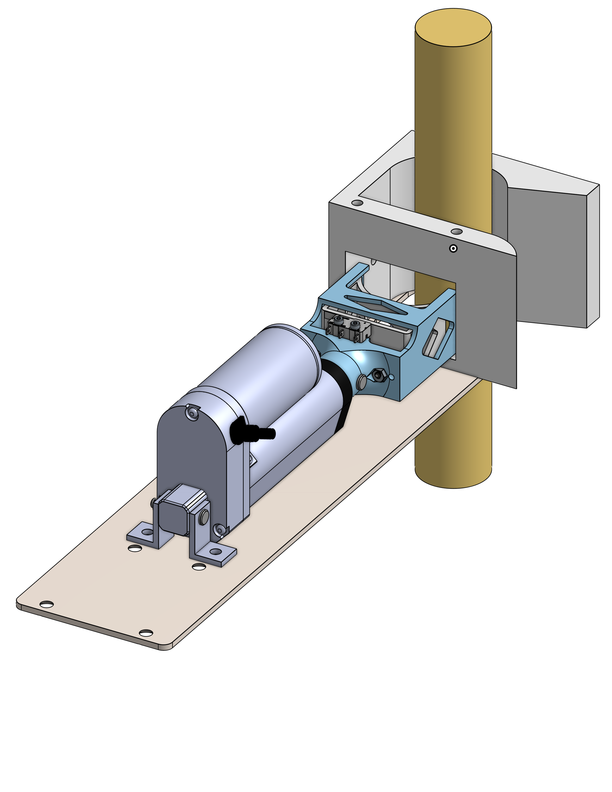
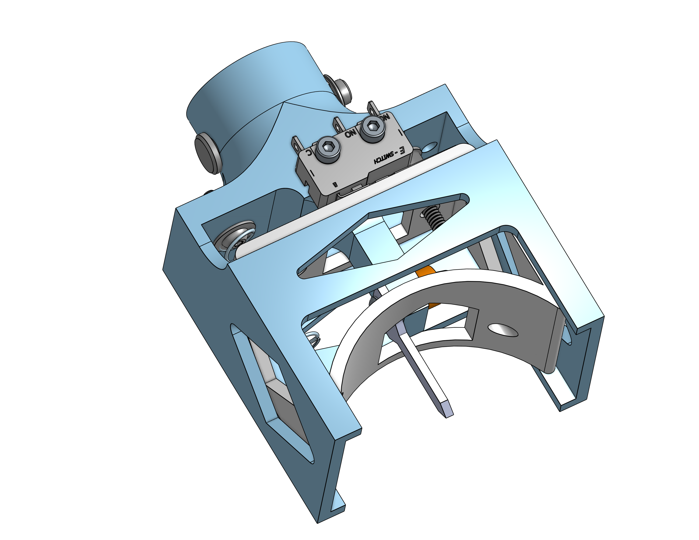
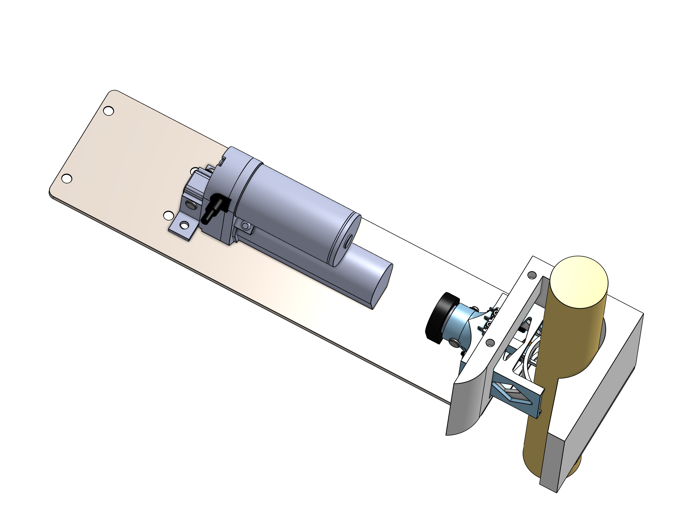

2022
Corn Stalk Nitrogen Sensing Attachment
As part of my work at Carnegie Mellon University's Field Robotics Institute, I designed and 3D-printed a handheld spring-loaded mechanism that used a linear actuator to insert a sensor into a corn stalk to read nitrogen levels. The linear actuator pushes the sensor into the corn stalk, and pulls back once a limit switch is hit to prevent from crushing the corn stalk.
CAD placeholder
CAD: full attachment with linear actuator
assets/img/corn-stalk-nitrogen-sensor/assembly-retracted.png

CAD placeholder
CAD: sensor insertion carriage and limit switch
assets/img/corn-stalk-nitrogen-sensor/attachment-head.png

CAD placeholder
CAD: attachment clamped on a corn stalk (large view)
assets/img/corn-stalk-nitrogen-sensor/assembly-extended.png
